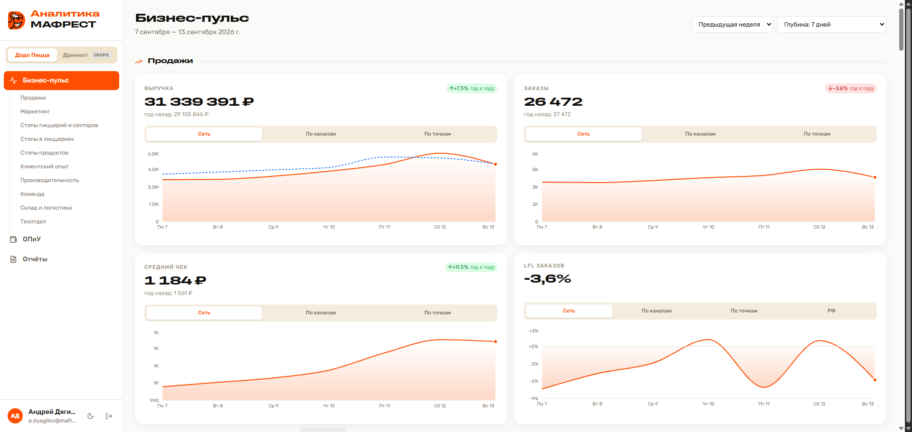

Дашборд «Бизнес-пульс»
Восемь разделов, свободный период, раскрытие до пиццерии и сектора. Им пользуется руководство сети — это и есть настоящая приёмка.
Вайбкожу внутри бизнеса: за три месяца в одиночку собрал ночные загрузчики, базу, дашборд и отчёт для сети из семи пиццерий.

«Бизнес-пульс» — главный экран дашборда. Неделя сети: выручка, заказы, средний чек и LFL, каждый показатель раскрывается по каналам и по точкам. Слева — разделы, которые смотрят на встрече руководителей.
Кодdodo-analytics-snapshotНиже — то, чем пользуются каждую неделю. Всё это собрано одним человеком за три месяца; как так вышло — в главе после проектов.
Восемь разделов, свободный период, раскрытие до пиццерии и сектора. Им пользуется руководство сети — это и есть настоящая приёмка.
Тринадцать загрузчиков: продажи, доставка, производство, стопы, рейтинги, склад, найм. История с 2016 года, каждую ночь цепочкой.
Пропуски закрываются сами, на сбой приходит алерт в Telegram.
Заявки техподдержки, управленческий отчёт финотдела, воронка найма — в той же базе, что и продажи, и за тот же период.
Один вопрос — один запрос, независимо от того, чья это система.
Производительность смен, текучка, воронка найма от отклика до выхода — в тех же разрезах и за тот же период, что и продажи.
У каждого отклонения обязательный исход: взято в работу с владельцем и сроком либо «принимаем как есть» с причиной.
Дашборд стал повесткой встречи, а не экраном.
В Додо руководители департаментов собирались раз в неделю в Platrum, и каждый перед встречей заносил свои цифры руками. В Додо море данных, каждая пиццерия обвешана метриками до отдельной станции на кухне — но в инструмент попадала только верхушка, а копнуть вглубь было нечем.
Сначала я пошёл коротким путём: перенёс отчётность в Yandex DataLens, выгружал из Superset, подтягивал через Google-таблицы. Стало нагляднее — но выгрузка осталась ручной, то есть проблема никуда не делась, просто похорошела.
Тогда сел на курс Алексея Куличевского «Осознанный вайбкодинг» и начал собирать сам. С 17 июня — 524 коммита в семи репозиториях, всё через Claude Code. Сейчас у руководства дашборд, куда данные приходят из разных систем ночью и без меня.
Главное, что я забрал с курса, — не приёмы общения с моделью, а сам порядок работы: идея проходит проверку раньше, чем в неё вложено время, а код — раньше, чем уедет в прод. Сам порядок собран из скиллов Claude Code.
Неудобные вопросы, пока в замысле не останется дыр. Часть задач умирает здесь — и хорошо.
План разбирается на задачи в GitHub — со своим смыслом и проверяемым результатом у каждой.
Код пишет Claude Code. Моя часть — держать рамку и не давать решать за меня там, где решение стоит денег.
Разбор самого кода: что сломается на краевых случаях, что дублирует уже написанное, где реализация разъехалась с замыслом.
Сверка сумм живыми запросами к источнику. Автотесты сюда напрашиваются, и Playwright я подключить могу — но пока проверяю руками: сошлась цифра или нет, знает только источник, не тесты и не ревью.
Тринадцать джобов делили один одноразовый токен, а очередь CI отменяла прогоны без ошибки — 74 срыва за два месяца, данные просто переставали приходить. Свёл всё в одну управляемую цепочку, токен переехал в базу под блокировку, на каждый сбой — алерт в Telegram.
Отмен ноль; день, который не загрузился, догоняется сам.
Это самая сложная часть всей работы — не загрузчики и не графики. Пока моя цифра не сходится с корпоративной системой, встреча уходит в спор о данных, а не о проблеме. Поэтому считаю по официальной методике сети, а не по своей формуле, и каждое расхождение разбираю до причины, а не подгоняю коэффициентом. Времени на это уходит больше, чем на всё остальное вместе.
Методика есть, но взять её и просто сойтись не получается. Она описывает принцип, а расхождение всегда сидит в деталях, которых в ней нет. Поэтому: подключил MCP к корпоративной базе знаний, чтобы читать методички прямо из редактора; залез в репозиторий чужого проекта на той же платформе за тем, чего нет в документации; а где молчали и документация, и код, — написал в техподдержку платформы и дождался ответа.
API без фильтров по дате и компании, даты по Москве при сети в Якутске, таблица финотдела со статьями, у которых названия неуникальны. Каждый источник пришлось приводить к общему времени, общему ключу и общему периоду — иначе «почти сходится» превращается в тихую ошибку, которую никто не заметит.
Додо Пицца, МАФРЕСТ — Якутск
Локальный и федеральный маркетинг, кампании, медиапланирование, анализ продаж. Параллельно — вся аналитическая инфраструктура сети.
Издательство «Кэскил»
Концепция продукта, дерево метрик, гипотезы, дорожная карта, работа команды разработки по скраму, продуктовая аналитика.
МОСТ БИЗНЕС
Базы данных, Grafana, Appmetrica, Метрика, Firebase. Воронки, когорты, сегментация, поиск точек роста.
inDrive — верификация водителей и документов, борьба с мошенничеством. «Копирка», Санкт-Петербург — дизайн и вёрстка полиграфии.